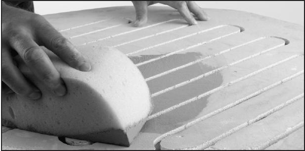
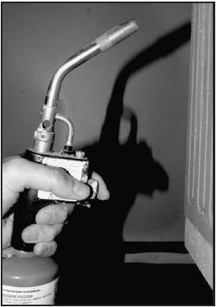
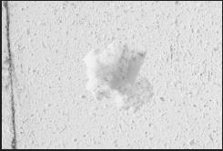
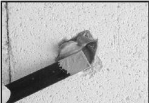

laastin levittäminen sienellä
2. Imuroi kaikki tiilipinnat jotka liitetään laastilla. Poista kaikki merkit pölystä.
(jos ei imuria ole käytettävissä voit poistaa pölyn kuivalla pensselillä tai
puhaltamalla paineilmaa. Älä hengitä tiilipölyä.)
3. Ruiskuta ohut vesisumu liitettäville pinnoille ennen laastin käyttöä.
Sekoita yksi tippa tiskiainetta kupilliseen vettä. Tiskiaine vähentää
pintajännitystä ja auttaa veden imeytymistä tiileen. Käytä suihkepulloa.
Huom: Vesi ei ole välttämätöntä jos työskentelet reippaasti. Tiilen kostutus vain
antaa enemmän työskentelyaikaa.
4. Kun olet levittänyt laastin tiilille ja painanut ne tiukasti paikoilleen, älä liikuta tiiliä.
Muutoin liitos ei pidä.Jos tiiltä liikuttaa laastin kovetuttua, saumassa voi näkyä hiushalkeamia.
Siinä tapauksessa irroita korjauspala ja laasti ja aloita alusta.
5.Pyyhi varovasti liika sementti tiilien pinnalta.
Älä kuitenkaan hio pintaa ennenkuin laasti on kovettunutyön yli.

propaanipolttimella kuumentaminen
Kun olet laastinut paikkauksen, kuumenna laastisaumaa propaanipolttimella. Pidä poltin n.15 cm päässä saumasta 10 sekunnin ajan. Liikuttele liekkiä edestakaisin, ettei synny liian jyrkkää kuuman rajaa ja lämpöshokkia. Anna paikkauksen kuitenkin kuivua yön yli ennen uunin lämmittämistä.
Propaanipolttimia voi ostaa tarvikeliikkeistä. Valitse sellainen malli, jossa on sytytysnappi. Kun painat napista liekki syttyy.
Älä käytä uunin huoltoon vanhanmallista poltinta, jossa pitää ensin avata kaasuhana ja sitten sytyttää tikulla. Sytytteleminen ja sammutteleminen on hankalaa. Painonappimalli on turvallisempi ja hintansa arvoinen.


shamottiseoksella täyttäminen
Täytä tiilenkolot shamotilla, johon on sekoittu paikkauslaastia. Shamotti on poltettua ja jauhettua tiiltä. [Meillä keramiikkakaupat myyvät sitä tuotemerkillä Molokiitti].Molokiitin laajenemisominaisuudet ovat lähempänä tiiltä ja siksi se pysyy paikoillaan. Käytä laastia sideaineena vain juuri sen verran että molokiitti pysyy koossa.
Huom: kuvissa on tiili, jota ei tarvitsisi korjata. Se on paikattu vain kuvausta varten.